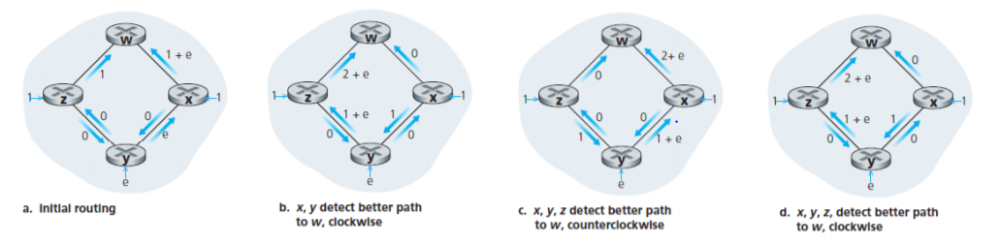

3.Route Algorithm
1. 路由算法概述
路由选择问题通过图 $G=(V, E)$ 表示，一条链路上的开销通常可能与物理长度、链路速度、金钱开销等有关。路由算法的目的是找出一条从源到目的的最短路径 $(x_1,...,x_p)$。路由选择算法通常存在以下几种划分方式。 集中式 or 分散式：
- 集中式路由算法 (centralized): 所有的路由器掌握全局信息，即完整的网络拓扑和链路费用。
- 分散式路由算法 (decentralized): 所有的路由器仅仅有直接与其相连的链路开销和节点的信息，通过迭代、分布式的方法计算最短路径。
静态 or 动态：
- 静态路由算法：手工配置，路由更新慢。
- 动态路由算法：随着网络流量负载或拓扑发生变化而改变路由选择路径。
2. 链路状态路由算法
链路状态 (Link State, LS) 路由算法是一种全局路由算法。首先，每个节点设置链路成本、构造并向其他结点广播链路状态分组（泛洪），当某个结点获得了全局的路由信息后，就使用 Dijskra 算法，经过 k 次迭代，求出到相邻结点的最短路径。最后，路由器将求出的最短路径反映到转发表中。

LS 算法 (以及其他以拥塞、时延为测度的算法) 可能会导致震荡 (oscillations) 现象。以上图为例，节点 x、y、z 分别要发往 w 节点 1、e、1 个单位的流量，初始的链路状态如 (a) 所示。随后，三台路由器都运行 LS 算法，它们确定的到 w 的最短路径将在逆时针和顺时针之间来回震荡。 一种有效的改进措施是不让所有的路由器同时运行 LS 算法，让每台路由器发送链路状态分组的时间随机化。
3. 距离向量路由算法
距离向量 (Distance-Vertor, DV) 路由算法是一个迭代的、异步的、分布式的算法。分布式：DV 算法需要从一个或多个邻居收集信息，执行计算后再把结果分发给邻居；迭代：DV 算法执行到邻居之间无更多信息可交换为止；异步：所有节点之间不需要步调一致。 DV 算法基于动态规划的 Bellman-Ford 方程：$d_x(y)=\min_v\lbrace c(x,v)+d_v(y)\rbrace$，其中 $(x,v)\in E$，$d_u(v)$ 表示 $u$ 到 $v$ 的最短路的长度。DV 算法中的每个结点 $x$ 维护以下三种路由选择信息：
- 一个距离向量：$\boldsymbol{D_x(y)}=( D_x(y):\ y\in E)$，包含 $x$ 到 $E$ 中所有点的开销估计
- 每个邻接点的开销 $c(x,v)$
- 每个邻接点的距离向量
每个节点不时地向它的每个邻居发送自己的距离向量副本。当 $x$ 从某个邻居 $v$ 收到了一个距离向量，就保存它并通过 Bellman-Ford 方程更新自己的距离向量；如果 $x$ 的距离向量因此而发生改变，就向每个邻居发送更新后的距离向量。只要节点之间持续以异步的方式交换距离向量，迭代终止时，$D_x(y)$ 就会收敛到 $d_x(y)$。
1 2 3 4 5 6 7 8 9 | loop for each node: wait (until I see a link cost change to some neighbor w or until I receive a distance vector from some neighbor w) for each y in E: D(x, y) = min{c(x, v) + D(v, y)} if D(x, y) changed for any destination y send distance vector Dx to all neighbors |
① 链路开销改变/链路故障

假设 $c(x,y)$ 从 $4$ 变为 $60$，在变化之前，$\boldsymbol{D_y}=(4,0,1)$，$\boldsymbol{D_z}=(5,1,0)$。在 $t_0$ 时刻，$y$ 探测到这个变化，并由 $\boldsymbol{D_z}$ 重计算 $D_y(x)=6$；随后，在 $t_1$ 时刻，$y$ 将变化通知 $z$，$z$ 又重计算 $D_z(x)=7$，这时就进入了路由选择环路 (routing loop)。经过 $44$ 次报文交换以后，$z$ 才能确定到 $x$ 的最短路为 $(z,x)$。当链路开销增加的非常大，或者链路故障了，迭代的次数也就更多。这个问题也被称作无穷计数问题 (count-to-infinity)。
② 无穷计数：增加毒性逆转
毒性逆转 (poisoned reverse) 的基本思想为：如果某点 $a$ 通过 $m$ 路由到目的地 $b$，那么 $z$ 向 $m$ 发送距离向量时，通告 $m$ 更新 $D_a(b)=\infty$，即使这是一个“善意的谎言”。 考虑 ① 中的情形，变化发生前，$y$ 存储的 $D_z(x)$ 已经为 $\infty$。随后，$y$ 与 $z$ 经过三次报文交换，就可以确定 $D_y(x)=d_y(x)=51$，且 $z$ 最后存储的 $D_y(x)=\infty$。 毒性逆转并没有解决一般性的无穷计数问题，如果不是两个直连的结点，就无法通过毒性逆转解决。
③ 无穷计数：定义最大度量
其基本思想为定义一个最大的度量，当超过这个值就认为是 $\infty$，并停止迭代。